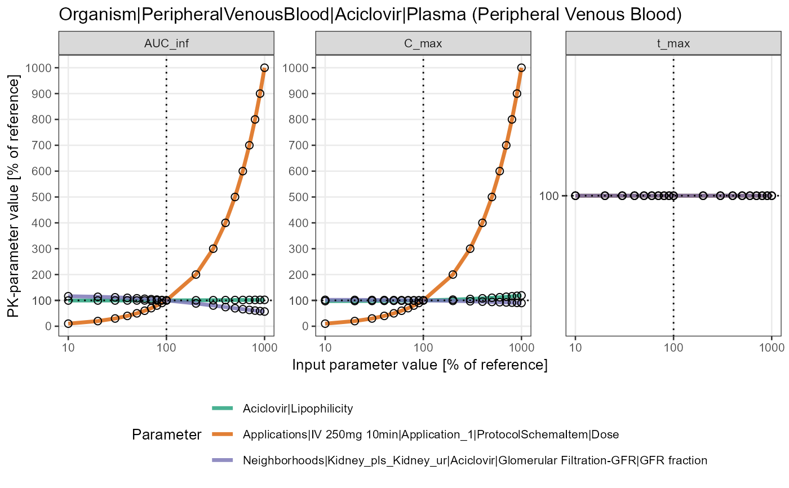

Sensitivity spider plot for PK parameters
Source:R/sensitivitySpiderPlot.R
sensitivitySpiderPlot.RdSensitivity spider plot for PK parameters
Usage
sensitivitySpiderPlot(
sensitivityCalculation,
xAxisLog = TRUE,
yAxisLog = FALSE,
savePlots = FALSE,
width = NA,
height = NA,
dpi = 300
)Arguments
- sensitivityCalculation
The
SensitivityCalculationobject returned byesqlabsR::sensitivityCalculation().- xAxisLog, yAxisLog
Logical that decides whether to display the axis on logarithmic scale.
- savePlots
Logical that decides whether you wish to save created plot(s). They are not saved by default. Note that if there are multiple output paths in your model, there will be multiple plots that will be saved.
- width, height
Plot size in inches. If not supplied, uses the size of current graphics device.
- dpi
Plot resolution. Also accepts a string input: "retina" (320), "print" (300), or "screen" (72). Applies only to raster output types.
Value
A list of dataframes with time-series and PK parameters data. This function also prints Concentration-time profile plots and Sensitivity spider plots.
Examples
# \dontrun{
simPath <- system.file("extdata", "Aciclovir.pkml", package = "ospsuite")
simulation <- loadSimulation(simPath)
outputPaths <- "Organism|PeripheralVenousBlood|Aciclovir|Plasma (Peripheral Venous Blood)"
parameterPaths <- c(
"Aciclovir|Lipophilicity",
"Applications|IV 250mg 10min|Application_1|ProtocolSchemaItem|Dose",
"Neighborhoods|Kidney_pls_Kidney_ur|Aciclovir|Glomerular Filtration-GFR|GFR fraction"
)
# extract the results into a list of dataframes
results <- sensitivityCalculation(
simulation = simulation,
outputPaths = outputPaths,
parameterPaths = parameterPaths
)
# print plots
sensitivitySpiderPlot(results)
#> $`Organism|PeripheralVenousBlood|Aciclovir|Plasma (Peripheral Venous Blood)`

#>
# print and save plots
if (FALSE) {
sensitivitySpiderPlot(
results,
savePlots = TRUE,
height = 6,
width = 12
)
}
# }